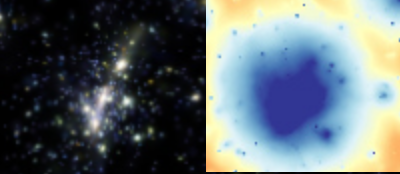
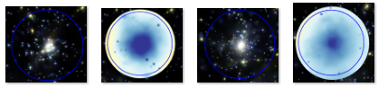

🚧Work in progress!🚧
^^ go back to parent lecture ^^
Here above, a syntehtic image from a galaxy cluster from the Magneticum (Dolag et al., 2025) numerical simulation. From top left clockwise: We can see the sysntethic optical emission from the stellar component of its galaxies, the Sunyaev-Zeldovich radio emission (not covered in this article), the X-ray emission (computed with PHOX, Biffi et al. 2012), and a map of the shocked gas (not relevant for this article).

Notice here below how cluster from the slider above, where it's optical image (left) is a lot streched diagonally. Now see how its X-ray emission (in the right) is much rounder than the optical one. This is a first insight that the multi-wavelength observations of our Universe are tricky, since they show different tracers: stars for the optical wavelength and gas for the X-ray emission, with different dynamics where stars and galaxy are collisionless (interacts only through gravity if we exclude the very weak effect of star evaportaion), while gas is collisional and so can thermalise in "short" time scales make it more

Even more interestingly here below we have two clusters of galaxies and for each we see the optical and X-ray emission. They have the same total mass and stellar mass (see how their optical images are very similar) but differ strongly on the X-ray emission,where one is rich of gas in the central part and the other is gas-poor with a much extended emission (see from left two right: optical and X-ray emission of one cluster rich less-diffusue cluster and then of the gas-poor but diffuse cluster).
This is a problem for people who do cosmology: first of all, how do they do it? well, they have numerical and theoretical models of how many galaxy clusters of a given mass are in theory. How you find them? well you discover it running numerical simulations, typically one chose gravity only simulations and ignore gas and star formation and black hole accretion and feedback since these ingredients hardly affect the total mass of a cluster (that is on Mpc scale). For instance using the so called halo mass function (HMF), that is the theoretical number count of haloes in a given volume, Just to give more details, for instance we know the HMF happens to be decreasing with mass, this comes from the ΛCDM simulations where we simulations showed the so called hierarchical structure formation: we start from nearly homogeneous particle distribution and because of gravity small structures start aggregatingng together forming bigger and bigger structures. One can go even further and search for spatial correlation between structures by estimating mathematically the correlation of having two (so called power spectrum) or three and more haloes nearby. So people run a lot of these simulations with different cosmologies, actually, running simulations is so expensive that people try to run less and interpolate using so called emulators (e.g. Bacco).
so, the halo mass of an object is estimated through it's X-ray emission, typically assuming a hydrostatic equilibrium, which by the way, is not necssarely there, while to estimate the mass of a halo from the amount of galaxy one assume a mass-richness relation
Is observing the universe in X-ray an easy task?
And here comes the really hot topic: these telescopes are of course biased towarards observing X-ray bright objects.. so, if there are X-ray faint clusters, what are they? what are these cosmological survey missing?


Source: Ragagnin et al. (2022b)
From the image above we see that while optical surveys (XUCS) measure gas fraction of galaxy clusters that are in agreement with the results of hydrodynamic numerical simulation of synthetic haloes
X-ray brightness is essentially a proxy for how much hot gas a cluster is holding onto. Two clusters of identical mass can have quite different amounts of gas: and therefore quite different X-ray luminosities. Earlier work already knew that these "baryonic" processes reshape cluster cores and gas content (Duffy et al. 2010 is one of my favourite read), and that a cluster gas content correlates with other structural properties, such as how centrally concentrated (Bose et al. 2019); and concentration itself being a marker of how dynamically settled, or "relaxed," a cluster is (Ludlow et al. 2019), while unsettled, still-merging clusters tend to be gas-rich (Davies et al. 2020).
What nobody had pinned down was a consistent, causal story for what makes some clusters systematically X-ray faint: under-luminous for their mass, and therefore at risk of being missed entirely by X-ray-selected catalogues.